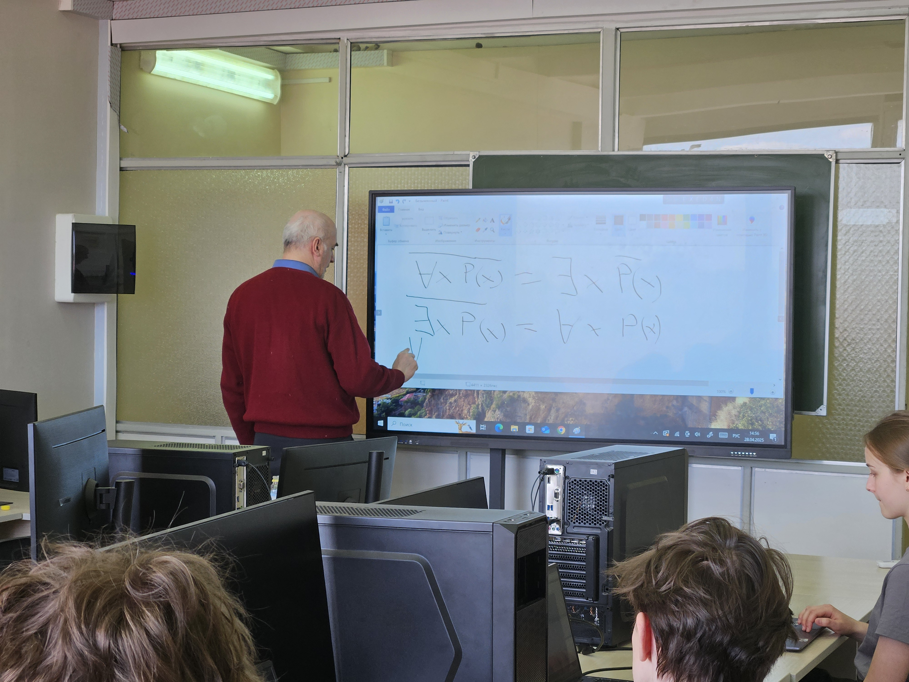
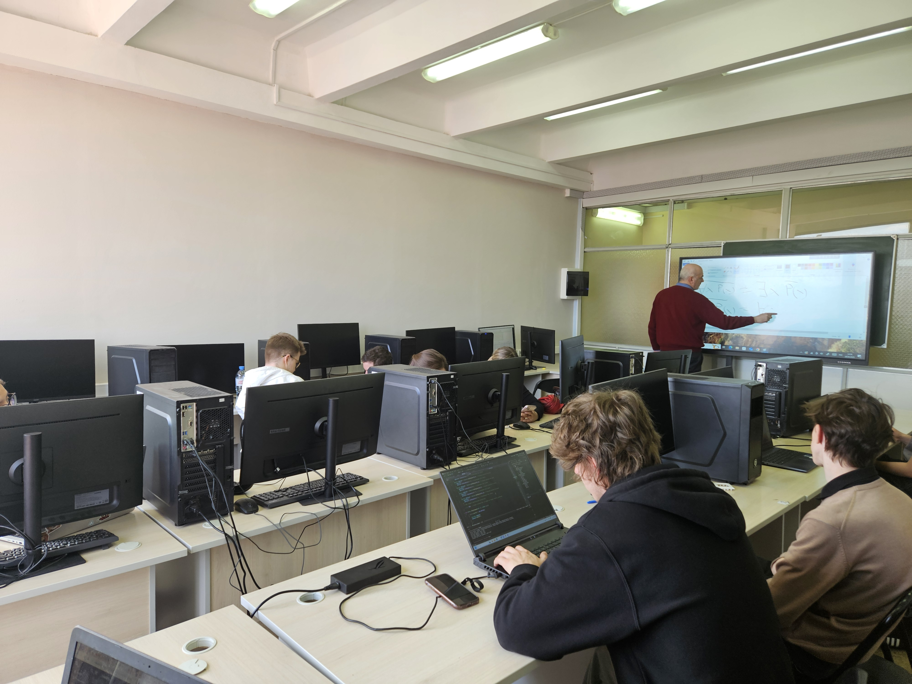
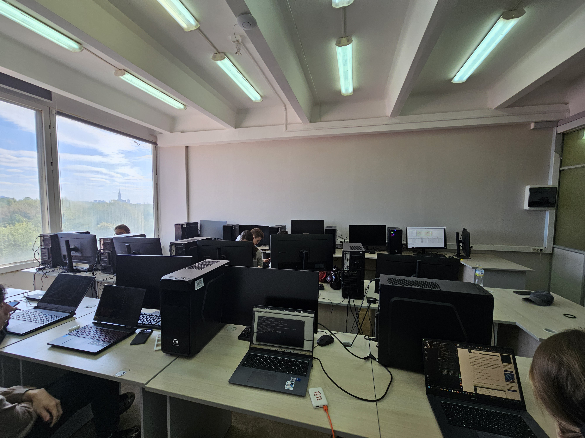

Журнал проекта Mathsem
1. Изучение основ (03.02 – 24.02)
Команда погрузилась в алгебру логики и теорию множеств, разбирая ключевые концепции: логические операции, законы де Моргана и их применение в программировании. Эти знания стали основой для алгоритмов, анализирующих логические формулы и работающих с множествами данных.
2. Распределение ролей (24.02)
Проект разделили на три направления: C++-разработчики – ядро программы и логические алгоритмы. Backend-разработчики – интеграция MySQL с веб-интерфейсом через Java. Frontend-разработчики – дизайн и вёрстка сайта (HTML/CSS/JS).
3. Прототип в Figma (24.02 – 25.03)
Создали адаптивные макеты для десктопа и мобильных устройств, продумав UX: навигацию, цветовую схему и компоненты. Это ускорило дальнейшую вёрстку.
4. Вёрстка сайта (25.03 – 30.04)
Реализовали адаптивный дизайн на HTML/CSS, используя Flexbox и Grid. Добавили анимации, SVG-графику для конструктора формул и обеспечили кросс-браузерность.
5. Интеграция БД и Backend (30.04 – 30.05)
Настроили: Авторизацию (Java + MySQL). Хранение формул в нормализованной БД. REST API для связи C++-ядра с фронтендом. Безопасность (подготовленные SQL-запросы, хеширование паролей). Теперь система сохраняет историю операций пользователей и работает стабильно.
  